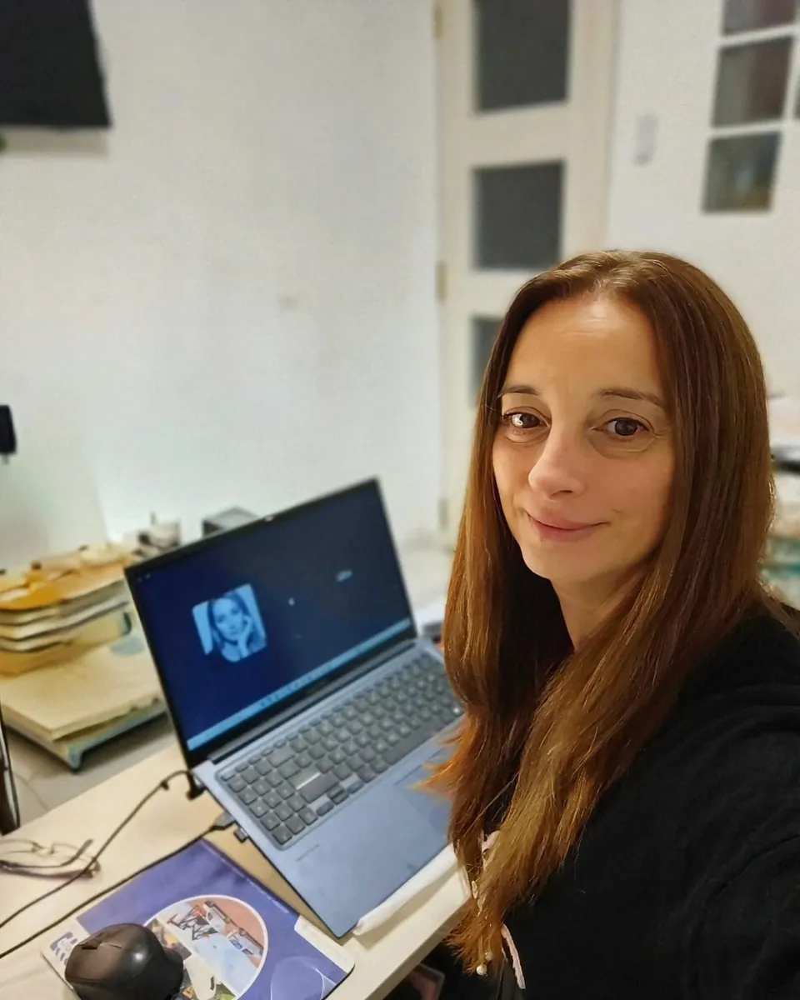
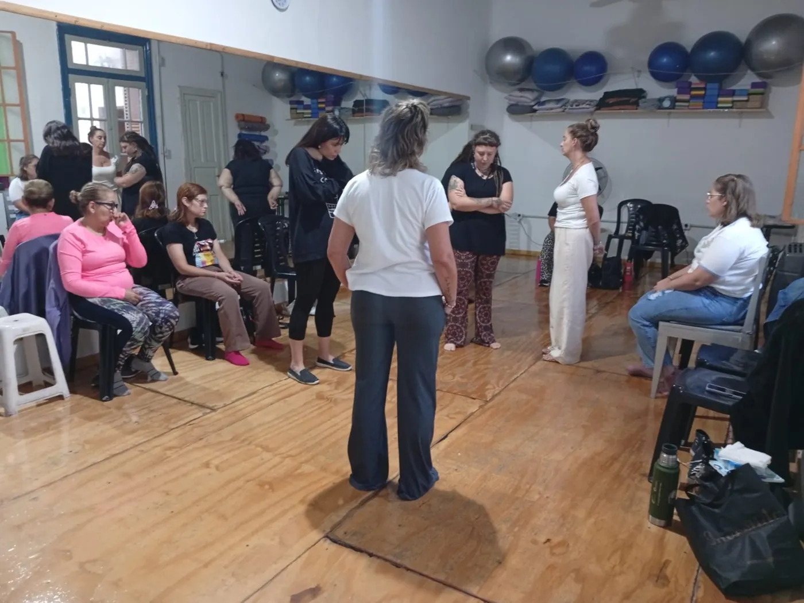

Escuela online para terapeutas holísticos
Formaciones online en constelaciones familiares, tarot y constelaciones fluviales
Cursás por módulos, con clases grabadas, el PDF de cada clase y un espacio para preguntar. Entrás con tu usuario y las formaciones se pagan por mes.
- Formaciones por módulos
- Talleres cortos
- Sesiones individuales
Las clases quedan grabadas: las mirás cuando puedas.
Formaciones, talleres y sesiones
Todo lo que podés cursar o reservar
No hay propuestas con esa búsqueda. Probá con «tarot» o «árbol».
Aula virtual · vista de ejemplo
Así sería tu aula virtual
Elegí una clase, descargá su PDF y dejá una pregunta. Para abrir todos los módulos, ingresá con cualquier usuario y contraseña.
Formación por módulos
Tu avance0 % completado
Clase del módulo
Qué es una constelación familiar
Preguntas de la clase
Ingreso de alumnos
Hola,
Tenés abiertos todos los módulos de .
Pagos mensuales

Quién te acompaña
Una escuela para formarte con método y con escucha
Instituto Renacer es una escuela online que capacita a terapeutas holísticos en constelaciones familiares, tarot y constelaciones fluviales. También ofrece talleres cortos y sesiones individuales para cualquier persona que necesite sanar.
«He dedicado mi vida a formar terapeutas empáticos que guíen a otros hacia la libertad y el bienestar.»
Metodología Vincores
- Práctica
Lo que ves en la clase lo aplicás desde el primer módulo.
- Raíz sistémica
Cada desafío se mira desde el sistema familiar del que viene.
- Escucha activa
La base para facilitar una sesión o un taller.

Cómo se cursa
- 01Te inscribís y recibís tu usuario
Con tu usuario y contraseña entrás al aula virtual.
- 02Mirás las clases cuando puedas
Quedan grabadas, ordenadas por módulo.
- 03Descargás el PDF de cada clase
Para repasar y practicar con tu propio sistema.
- 04Preguntás en cada clase
El equipo docente te responde en el chat de la clase.
Lo que suelen preguntar antes de inscribirse
¿Te quedó otra duda? Escribinos y te respondemos por WhatsApp.
+54 9 341 651-6632¿Necesito experiencia previa en terapias?
No. Las formaciones arrancan desde las bases de la mirada sistémica, y cada clase tiene su espacio para preguntar lo que no quedó claro.
¿Cuánto dura cada formación?
La de constelaciones familiares dura 12 meses. Tarot y constelaciones fluviales son más cortas, y los talleres se hacen en pocos encuentros. Cada ficha dice la duración.
¿Cómo entro a las clases?
Con tu usuario y contraseña, desde el aula virtual. Las clases quedan grabadas y las mirás desde la compu o el celular, a la hora que puedas.
¿Qué acompañamiento tengo durante la cursada?
Cada clase tiene su chat de preguntas: escribís tu duda y el equipo docente te responde ahí mismo. Además, cada clase trae su PDF para repasar.
¿Cómo se pagan las formaciones?
Por mes: pagás una cuota mensual mientras dura la formación. Los talleres y las sesiones individuales se pagan una sola vez.
¿Es solo para quienes quieren ser terapeutas?
No. También podés hacerla para tu propio proceso. Y si querés trabajar de esto, te da las herramientas para facilitar sesiones y talleres.
Aprendé a acompañar a otros a encontrar su propio renacer
Contanos qué te interesa y te ayudamos a elegir entre las formaciones, los talleres y las sesiones.